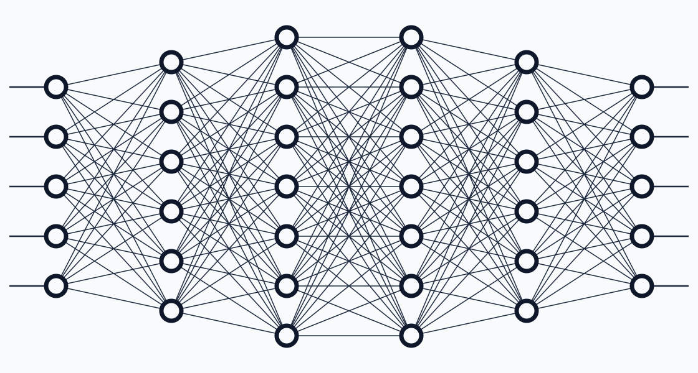
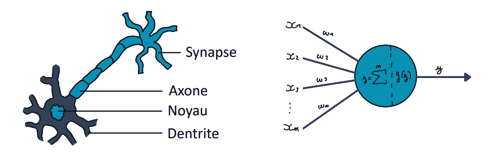
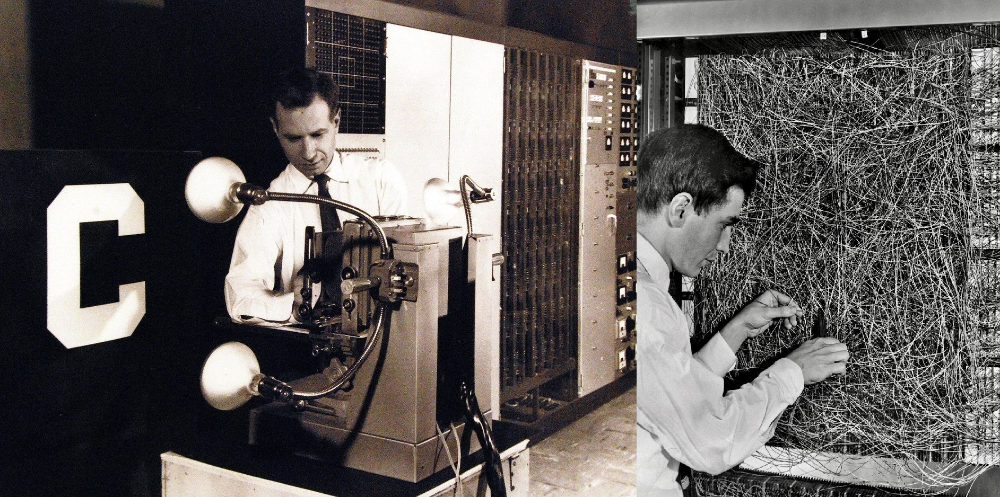

Introduction aux réseaux de neurones artificiels et programmation d'un framework en C.
MathématiquesAlgorithmiqueIAC
TYPE
Projet personnel
TECHNOLOGIES
C99
STATUT
Terminé

01 — CONTEXTE
Le projet.
Depuis le lycée, j'ai eu l'occasion d'expérimenter de petits projets de réseaux de neurones, mais toujours sous Python. J'essayais alors, avec mon niveau mathématiques de l'époque de comprendre leur fonctionnement. Cependant, j'ai longtemps dû me résigner à accepter certains concepts sans les maîtriser pleinement.
Pour concevoir mes futurs projets personnels (simulation, systèmes autonomes, moteurs de jeux, etc.), il me fallait mon propre framework autonome de A à Z. C'est de ce besoin qu'est né ce projet en C99 : comprendre chaque concept mathématique et informatique en l'implémentant moi-même.
02 — OBJECTIFS
Le problème à résoudre.
Le cahier des charges de ce framework s'articule autour de quatre piliers fondamentaux :
Zéro dépendance externe :
Écriture en C pur, reposant uniquement sur la bibliothèque standard.
Réutilisabilité et modularité :
Offrir une API claire et découplée afin de pouvoir intégrer facilement des réseaux de neurones dans d'autres applications futures.
Double paradigme d'apprentissage :
Supporter à la fois l'apprentissage supervisé par gradient (via rétropropagation) et l'optimisation sans gradient (par algorithme génétique).
Rigueur système :
Assurer une gestion stricte de la mémoire (garantissant l'absence totale de fuites) ainsi qu'une persistance binaire robuste des modèles.
Au final, l'objectif est de coder une bonne fois pour toutes une structure de réseau de neurones stable et modulaire, mévitant de tout reconstruire pour mes projets futurs.
03 — RÉALISATION
Fondations théoriques et mathématiques.
Le Perceptron a été créé en 1957 par Frank Rosenblatt, un psychologue et chercheur américain, avec pour objectif principal de modéliser le fonctionnement du cerveau humain pour comprendre comment nous apprenons, percevons notre environnement et prenons des décisions. Rosenblatt souhaitait concevoir une machine capable d'apprendre par elle-même, sans que chaque règle ne soit codée à la main.
À l'époque, les neurosciences commençaient à décrypter le fonctionnement des neurones biologiques. Le Perceptron a donc été conçu comme un neurone artificiel : tout comme un neurone biologique reçoit des signaux électriques via ses dentrites et décide ou non de transmettre l'information, le Perceptron reçoit plusieurs entrées, attribue une importance à chacune (avec un poids), effectue la somme de ces données et applique un seuil pour donner un résultat binaire (0 ou 1, "oui" ou "non").

Figure 1 - A gauche, un neurone biologique, et à droite, un Perceptron.
Le premier modèle (le Mark I Perceptron) était une machine physique reliée à une caméra de 400 pixels, conçue pour reconnaître des formes géométriques simples et des lettres de l'alphabet, indépendamment de leur orientation ou de leur taile. Avant ça, les ordinateurs étaient purement déterministes. La grande révolution du Perceptron résidait dans sa règle d'apprentissage : si la machine se trompait, un algorithme ajustait automatiquement ses paramètres jusqu'à ce qu'elle trouve la bonne réponse. C'était la naissance de l'apprentissage supervisé.

Figure 2 - Photographies de Frank Rosenblatt avec un ordinateur Mark I Perceptron en 1960.
Comment fonctionne un Perceptron ?
Nous pouvons définir un Perceptron comme une fonction qui prend en entrée un vecteur colone $x=[x_1, x_2, \dots, x_n]^T$, auquel on applique le produit scalaire d'un vecteur de poids $w=[w_1, w_2, \dots, w_n]^T$, un biais $b$, puis une fonction de seuil pour renvoyer un résultat binaire.
Concrètement, on arrive aux formules suivantes :
$$ z=\sum^n_{i=1}{w_ix_i}+b=w^Tx+b $$
Puis pour la sortie :
$$ \hat{y} = a(z) = \begin{cases} 1 & \text{si } z \geq 0 \\ 0 & \text{sinon} \end{cases} $$
Tout l'enjeu du Perceptron est de trouver les bons paramètres $w_i$ et $b$ pour prédire systématiquement la bonne sortie. C'est le rôle de l'apprentissage : ajuster les poids et les biais à partir de l'erreur commise.
On commence par calculer l'erreur, définie par la différence entre la sortie attendue et la prédiction $\varepsilon=y-\^y$. On applique ensuite la règle de mise à jour suivante, avec $\alpha$ le taux d'apprentissage (learning rate) :
$$ w_i \leftarrow w_i + \alpha \varepsilon x_i \quad \text{et} \quad b \leftarrow b + \alpha \varepsilon $$
L'idée est de faire évoluer chaque paramètre dans la direction qui minimise l'erreur.
Démontré par Rosenblatt, le théorème de convergence du Perceptron garantit que si les données sont linéairement séparables, l'algorithme trouvera une solution parfait en un nombre fini d'étapes. En revanche, si elles ne le sont pas (exemple simple : la porte logique XOR), l'algorithme boucle à l'infini.
Le passage aux réseaux de neurones (MLP)
Afin de s'affranchir de la limite des problèmes non linéaires, les chercheurs ont complexifié la structutre en imbriquant plusieurs couches de neurones artificiels (Multi Layer Perceptron pour MLP).
Figure 3 - Représentation d'un réseau de neurone multicouche (MLP).
Cependant, imbriquer de simples perceptrons posait un problème majeur : il était impossible de déterminer la responsabilité de chaque neurone dans l'erreur finale, bloquant tout l'apprentissage.
Pour résoudre ce verrou, il a fallu remplacer la fonction de seuil discontinue d'Heaviside par des fonctions d'activation non linéaire et dérivables (nous les étudieront plus en détail après). La sortie n'est plus un choix binaire strict, mais une valeur continue, ce qui permet d'indiquer un degré de certitude de la réponde, et surtout de calculer des gradients précis pour chaque neurone.
En combinant ces neurones, on obtient une architecture structurée en :
Une couche d'entrée qui reçoit les données brutes
Des couches cachées, où le réseau extrait des caractéristiques de plus en plus complexes et abstraites
Une couche de sortie, qui fournit la prédiction finale
Mathématiquement, un réseau de neurone n'est rien d'autre qu'une vaste composition de fonctions dont on cherche à optimiser les paramètres.
La passe avant (FeedForward)
La passe avant (FeedForward) est le processus par lequel les données traversent le réseau couche après couche pour produire la prédiction finale. À cette étape, le réseau applique uniquement ses fonctions mathématiques avec ses paramètres actuels, il n'apprend pas encore.
Formalisons l'architecture d'un MLP comportant des couches $l=1$ (entrée) à $l=L$ (sortie) :
$a^{[l]}$ : Le vecteur des activations de la couche $l$ (la sortie de cette couche).
$W^{[l]}$ : La matrice des poids reliant la couche $l-1$ à la couche $l$.
$b^{[l]}$ : Le vecteur des biais de la couche $l$.
$g^{[l]}(.)$ : La fonction d'activation de la couche $l$.
Pour chaque couche $l$ (de $l=1$ à $l=L$), le réseau effectue deux opérations successives :
L'activation non linéaire :
$$ a^{[l]} = g^{[l]}(z^{[l]}) $$
La valeur $a^{[l]}$ sert ensuite d'entrée pour la couche suivante $l+1$.
La descente de gradient
En mathématiques, la descente de gradient est une méthode itérative pour trouver le minimum d'une fonction. Imaginez que vous êtes perdu au sommet d'une montagne embrumée en plein milieu de la nuit et que vous voulez atteindre la vallée. Ne voyant rien, vous pouvez seulement ressentir l'inclinaison du sol sous vos pieds : la stratégie logique est de faire un pas dans la direction où la pente est la plus raide vers le bas, puis recommencer jusqu'à ce que le sol devienne plat. Cette méthode garantit d'atteindre au moins un minimum local.
Avec cette analogie, en optimisation mathématique :
La montage est la fonction de coût (ou Loss Function) notée $J\left(\Theta\right)$, qui mesure l'erreur du modèle.
Les coordonnées géographiques sont les paramètres du modèle, regroupés dans un vecteur $\Theta$.
La pente est le gradient, noté $\nabla J\left(\Theta\right)$, composé de toutes les dérivées partielles de la fonction de coût par rapport à chaque paramètre :
$$ \nabla J(\Theta) = \begin{bmatrix} \frac{\partial J}{\partial \Theta_1} \\ \frac{\partial J}{\partial \Theta_2} \\ \vdots \end{bmatrix} $$
Le gradient pointe toujours vers la plus forte montée. Pour descendre, on progresse donc dans la direction opposée. À chaque itération, on ajuste les paramètres selon l'équation :
$$ \Theta \leftarrow \Theta - \alpha \nabla J\left( \Theta \right) $$
Le taux d'apprentissage $\alpha$ correspond à la taille du pas. S'il est trop grand (prenons 1km), on saute par-dessus la vallée. S'il est trop petit (prenons 1cm), la descente prend une éternité.
Dans les réseaux de neurones, la fonction de coût ressemble à un paysage chaotique comportant des milliers de minimums locaux. L'optimisation se décline en trois stratégies principales :
Le Gradient Batch :
Calcule l'erreur sur l'ensemble de la base de données avant chaque pas. C'est stable mais très lent.
Le Gradient Stochastique (SGD) :
Calcule l'erreur pour chaque exemple, un par un. C'est rapide et le bruit aide à s'extraire des minimums locaux. Cependant, la trajectoire est erratique.
Le Gradient par Mini-Batchs :
Le compromis moderne. On découpe les données en petits groupes pour calculer un gradient moyen.
La rétropropagation du gradient (Backpropagation)
Pour mettre à jour les poids, il faut savoir calculer le gradient pour n'importe quel paramètre au milieu du réseau. L'algorithme de la rétropropagation utilise la règle de dérivation en chaîne pour remonter l'erreur de la sortie vers l'entrée :
$$ \frac{\partial J}{\partial \Theta^{[l]}} = \frac{\partial J}{\partial a^{[l+1]}} \frac{\partial a^{[l+1]}}{\partial z^{[l]}} \frac{\partial z^{[l]}}{\partial \Theta^{[l]}} $$
En combinant les dérivées de l'agrégation ($z^{[l]} = W^{[l]} a^{[l-1]} + b^{[l]}$) et en définissant le vecteur d'erreur d'une couche $\delta^{[l]}$, on obtient l'équation de récurrence fondamentale de la rétropropagation :
$$ \delta^{[l]} = ((W^{[l+1]})^T \ \delta^{[l+1]}) \odot g'(z^{[l]}) $$
($\odot$ représente le produit de Hadamard, c'est à dire produit élément par élément).
On calcule ensuite les gradients finis pour les poids et biais de chaque couche :
$$ \frac{\partial J}{\partial W^{[l]}} = \delta^{[l]} (a^{[l-1]})^T \quad \text{et} \quad \frac{\partial J}{\partial b^{[l]}} = \delta^{[l]} $$
Fonctions d'activation
Fonction Linéaire (Identité)
$$ Id(z) = z \quad \text{donc} \ quad \frac{\partial g}{\partial z}(z) = 1 $$
A n'utiliser que sur la couche de sortie d'un réseau effectuant une tâche de régressionpure (lorsqu'on veut prédire une valeur continue sans borne). Sur les couches cachées, elle n'a aucun intérêt puisque la composition de fonctions linéaires reste linéaire (on reviendrait au problème initial du perceptron).
Rectified Linear Unit (ReLU)
$$ \text{ReLU}(z) = \begin{cases} z & \text{si } z \geq 0 \\ 0 & \text{sinon} \end{cases} \quad \text{donc} \quad \frac{\partial g}{\partial z}(z) = \begin{cases} 1 & \text{si } z \geq 0 \\ 0 & \text{sinon} \end{cases} $$ $$
C'est le standard incontournable pour les couches cachées car elle est ultra-rapide et atténue la disparition du gradient pour les valeurs positives. Elle a pour inconvénient de totalement supprimer le gradient lorsque l'entrée est négative (le neurone n'est donc plus mis à jour si l'entrée est toujours négative).
Sigmoïde ($\sigma$)
$$ \sigma(z) = \frac{1}{1 + e^{-z}} \quad \text{donc} \quad \frac{\partial g}{\partial z}(z) = \sigma(z) (1 - \sigma(z)) $$
La sigmoïde est très populaire, car elle comprime la sortie entre 0 et 1. Elle est idéale pour la classification binaire en couche de sortie (pour exprimer une probabilité). Cependant, elle souffre du problème de la disparition du gradient pour les grandes valeurs absolues.
Tangente Hyperbolique ($\tanh$)
$$ \tanh(z) = \frac{e^z - e^{-z}}{e^z + e^{-z}} \quad \text{donc} \quad \frac{\partial g}{\partial z}(z) = 1 - \tanh^2(z) $$
Centrée sur zéro et bornée entre -1 et 1, elle facilite parfois la convergence par rapport à la sigmoïde.
Leaky ReLU
$$ \text{LeakyReLU}(z) = \begin{cases} z & \text{si } z \geq 0 \\ az & \text{sinon} \end{cases} \quad \text{(avec } a=0.01 \text{) donc} \quad \frac{\partial g}{\partial z}(z) = \begin{cases} 1 & \text{si } z \geq 0 \\ 0 & \text{sinon} \end{cases} $$ $$
C'est une variante directe de la fonction ReLU. En autorisant une petite pente pour les valeurs négatives au lieu de les annuler complètement, elle résout le problème des neurones morts et maintient le gradient actif.
Exponentiel Linear Unit (ELU)
$$ \text{ELU}(z) = \begin{cases} z & \text{si } z \geq 0 \\ az(e^z-1) & \text{sinon} \end{cases} \quad \text{(avec } a=0.01 \text{) donc} \quad \frac{\partial g}{\partial z}(z) = \begin{cases} 1 & \text{si } z \geq 0 \\ \sigma(z)+a & \text{sinon} \end{cases} $$ $$
Cette fonction combine les avantages de la ReLU tout en ayant des sorties dont la moyenne est proche de zéro, ce qui accélère l'apprentissage et rapproche dont la moyenne est proche de zéro, ce qui accélère l'apprentissage et rapproche l'activation d'une normalisation naturelle.
Sigmoid Linear Unit / Swish (SiLU)
$$ \text{SiLU}(z) = z \sigma(z) \quad \text{donc} \quad \frac{\partial g}{\partial z}(z) = \sigma(z) + z \sigma(z)(1-\sigma(z)) $$
Découverte par des recherches en automatisation d'architecture (notamment par Google), elle surpasse souvent la ReLU dans les réseaux très profonds. Elle est lisse, non monotone et possède une "bosse" négative subtile qui aide à la représentation.
Gaussian Error Linear Unit (GELU)
$$ \text{GELU}(z) = z \Phi(z) = \frac{z}{2} \left[ 1 + \text{erf}\left( \frac{z}{\sqrt{2}} \right) \right] \quad \text{donc} \quad \frac{\partial g}{\partial z}(z) = \Phi(z) + z \phi(z) = \frac{1}{2} \left[ 1 + \text{erf}\left( \frac{z}{\sqrt{2}} \right) \right] + \frac{z}{\sqrt{2\pi}} e^{-\frac{z^2}{2}} $$
Cette fonction pondère l'entrée par sa probabilité d'occurrence selon une loi normale standard. Sa courbure lisse et non monotone permet de conserver de petits gradients négatifs, ce qui évite le problème des neurones morts et améliore les performances sur les architectures de type Transformer.
Scaled Exponential Linear Unit (SELU)
$$ \text{SELU}(z) = \lambda \begin{cases} z & \text{si } z \geq 0 \\ az(e^z-1) & \text{sinon} \end{cases} \quad \text{(avec } \lambda=1.0507 \text{ et } a=1.6732 \text{) donc} \quad \frac{\partial g}{\partial z}(z) = \lambda \begin{cases} 1 & \text{si } z \geq 0 \\ ae^z & \text{sinon} \end{cases} $$
Conçue mathématiquement pour que les activations s'auto-normalisent (moyenne à 0 et variance à 1) au fil des couches, évitant ainsi le besoin de couches de normalisation supplémentaires.
Règles générales de sélection des activations :
Couche de sortie : Linéaire pour la régression pure (valeur continue sans borne), sigmoïde pour la classification binaire (probabilité entre 0 et 1).
Couches cachées : ReLU par défaut pour sa vitesse et son efficacité. utiliser LeakyReLU ou ELU en cas de neurones morts, tanh pour des activations centrées entre -1 et 1, et SiLU/GELU pour des architectures avancées.
Les Fonctions de Coût (Loss Functions)
Erreur Quadratique Moyenne (MSE)
$$ \text{MSE}(\^y) = \frac{1}{2n} \sum^m_{i=1}(\^y_i - y_i)^2 \quad \text{donc} \quad \frac{\partial L}{\partial \^y} = \^y - y $$
C'est la fonction de référence pour les tâches de régression (prédire une valeur continue). Elle pénalise lourdement les grandes erreurs grâce au carré, ce qui guide l'optimiseur efficacement vers la solution.
Erreur Absolue Moyenne (MAE)
$$ \text{MAE}(\^y) = \frac{1}{n} \sum^m_{i=1}{|\^y_i-y_i|} \quad \text{donc} \quad \frac{\partial L}{\partial \^y} = \text{signe}(\^y - y) $$
Egalement utilisé en régression, elle est beaucoup moins sensible aux valeurs aberrantes que la MSE, l'erreur n'étant pas mise au carré.
Entropie Croisée Binaire / Log Loss (BCE)
$$ \text{BCE}(\^y) = -\frac{1}{n} \sum^m_{i=1}\left[ y_i \log(\^y_i) + (1-y_i)\log(1-\^y_i) \right] \quad \text{donc} \quad \frac{\partial L}{\partial \^y} = \frac{\^y - y}{\^y(1-\^y)} $$
Le standard incontournable pour la classification binaire (lorsque la sortie est une probabilité entre 0 et 1 via une sigmoïde). Elle pénalise sévèrement un modèle confiant mais qui se trompe.
Entropie Croisée Catégorielle (CCe)
$$ \text{CCE}(\^y) = -\sum_c{y_c \log(\^y_c)} \quad \text{donc} \quad \frac{\partial L}{\partial \^y} = -\frac{y_c}{\^y_c} $$
Utilisée pour la classification multiclasse (pour une cible encodée en one-hot). Elle mesure la distance entre la distribution de probabilité prédite par le modèle et la distribution réelle.
Illustration technique — remplace cette image
par une capture pertinente.
04 — RÉSULTATS
Le résultat.
Ce projet de framework de Deep Learning de A à Z a permis d'atteindre l'ensemble des objectifs fixés au cahier des charges :
01
Résultat obtenu
La mise en place réussie d'une architecture modulaire et autonome en C pur, capable de gérer à la fois la passe avant (FeedForward), la rétropropagation du gradient (Backpropagation), ainsi qu'un grand nombre de fonctions d'activation et de coûts documentées. Le tout s'accompagne d'une gestion rigoureuse de la mémoire pour garantir une stabilité totale.
02
Compétence développée
L'approfondissement de la rigueur de programmation bas niveau en C (gestion dynamique, robustesse, absence de fuites) couplé à une compréhension mathématique rigoureuse et concrète des algorithmes d'apprentissage automatique.
03
Amélioration possible
En tant que suite logique ou piste d'optimisation, l'intégration future de calculs vectorisés ou d'une parallélisation multithread (via OpenMP) permettrait d'accélérer significativement les phases d'entraînement sur des datasets plus volumineux.
05 — COMPÉTENCES
Ce que j'ai appris.
Ce projet personnel représente bien plus qu'un simple : il m'a permis de démystifier totalement le fonctionnement interne des réseaux de neurones.
J'ai pu apprendre à traduire des équations mathématiques théoriques en un code informatique propre, performant et modulaire.
Structurer une API claire en C, rendant le framework réutilisable pour mes futurs projets (systèmes autonomes, simulations, etc.) sans dépendance externe.
Comprendre en profondeur les tenants et aboutissants de la rétropropagation et de l'optimisation par descente de gradient, en s'affranchissant de la "boîte noire" des bibliothèques de haut niveau comme Python.